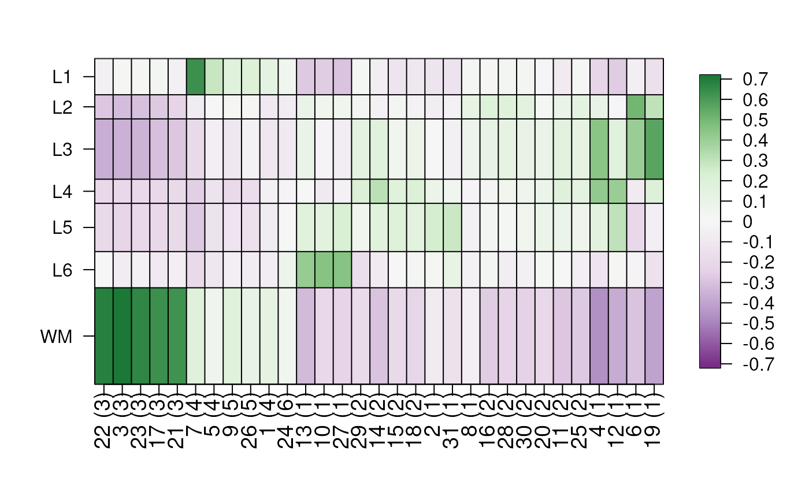
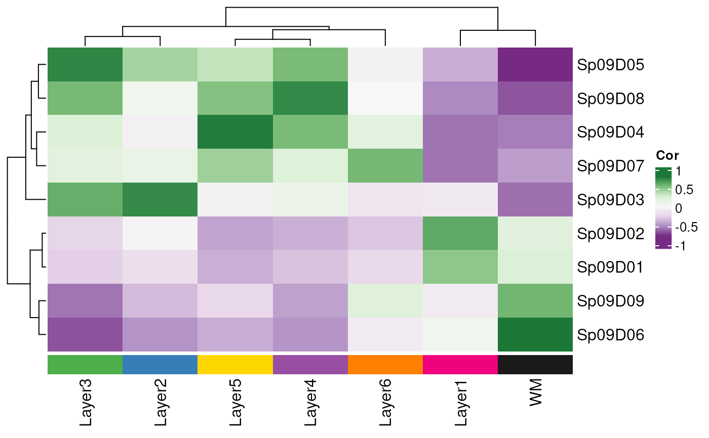
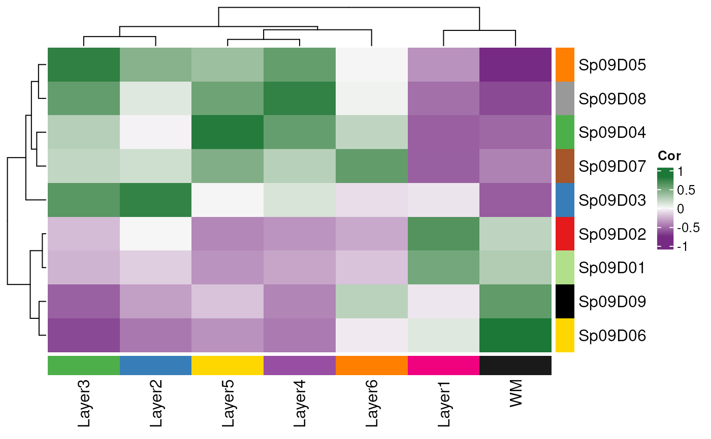
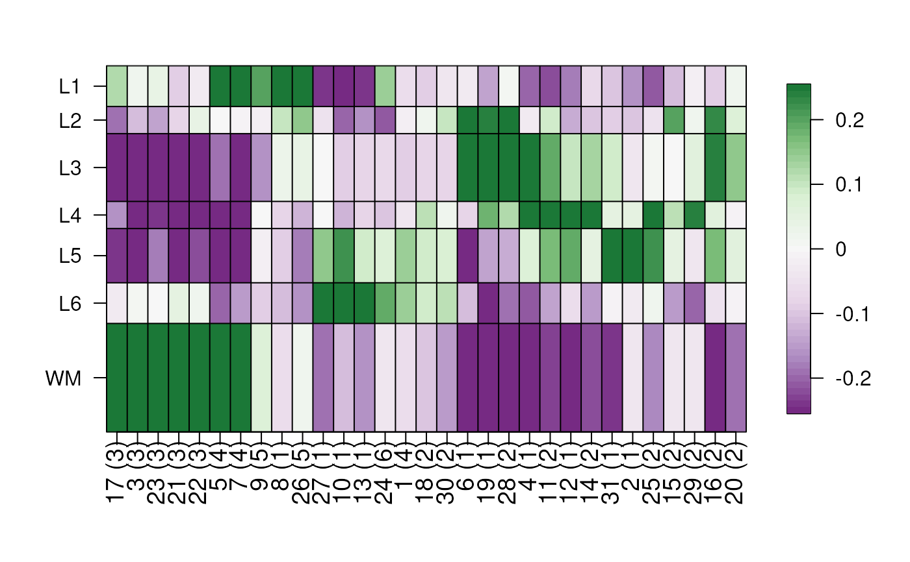
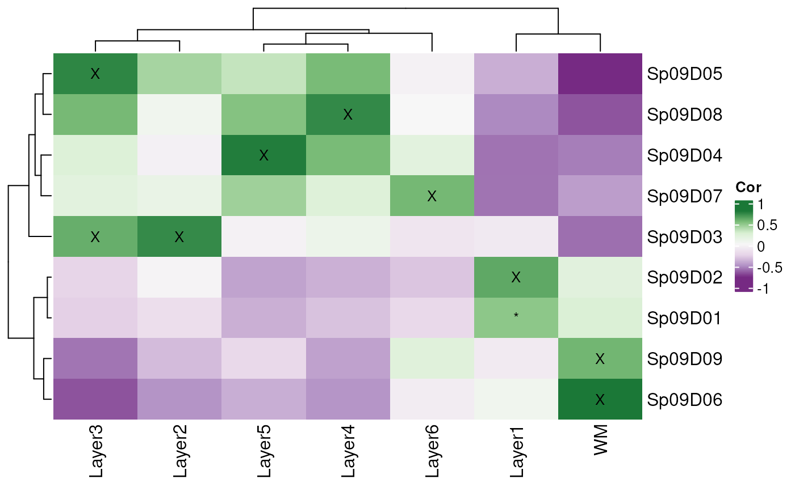
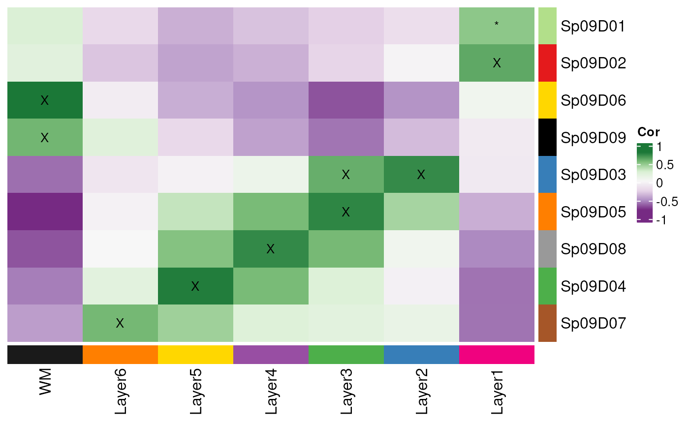
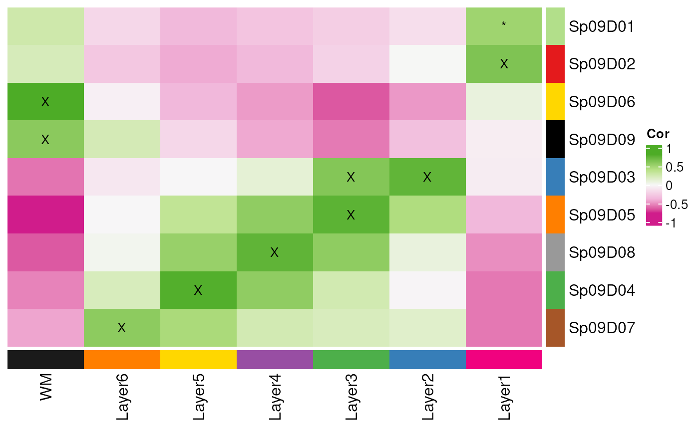

R/layer_stat_cor_plot.R
layer_stat_cor_plot.RdThis function makes a ComplexHeatmap from the correlation matrix
between a reference and query modeling statistics from layer_stat_cor().
For example, between the query statistics from a set of cell cluster/types
derived from scRNA-seq or snRNA-seq data (among other types) and the
reference layer statistics from the Human DLPFC Visium data (when using the
default arguments).
layer_stat_cor_plot(
cor_stats_layer,
color_max = max(cor_stats_layer),
color_min = min(cor_stats_layer),
color_scale = RColorBrewer::brewer.pal(7, "PRGn"),
query_colors = NULL,
reference_colors = NULL,
annotation = NULL,
...
)The output of layer_stat_cor().
A numeric(1) specifying the highest correlation value for
the color scale (should be between 0 and 1).
A numeric(1) specifying the lowest correlation value for
the color scale (should be between 0 and -1).
A character vector with three or more values specifying
the color scale for the fill of the heatmap. The first value is used for
color_min, the middle for zero, and the last for color_max. If an even
number of colors are supplied, the last color is dropped to center zero.
named character vector of colors, Adds colors to query
row annotations.
named character vector of colors, Adds colors to
reference column annotations.
annotation data.frame output of
annotate_registered_clusters(), adds 'X' for good confidence annotations,
'*' for poor confidence.
Additional parameters passed to
ComplexHeatmap::Heatmap() such as cluster_rows
and cluster_columns.
(Heatmap-class) plot of t-stat correlations
Includes functionality to add color annotations,
(helpful to match to colors in Visium spot plots), and annotations from
annotate_registered_clusters().
Other Layer correlation functions:
annotate_registered_clusters(),
layer_stat_cor()
## Obtain the necessary data
## reference human pilot modeling results
if (!exists("modeling_results")) {
modeling_results <- fetch_data(type = "modeling_results")
}
#> 2025-02-28 22:24:59.087351 loading file /github/home/.cache/R/BiocFileCache/6ad6409885b6_Human_DLPFC_Visium_modeling_results.Rdata%3Fdl%3D1
## query spatialDLPFC modeling results
query_modeling_results <- fetch_data(
type = "spatialDLPFC_Visium_modeling_results"
)
#> 2025-02-28 22:25:00.163507 loading file /github/home/.cache/R/BiocFileCache/75ff7e089609_modeling_results_BayesSpace_k09.Rdata%3Fdl%3D1
## Compute the correlations
cor_stats_layer <- layer_stat_cor(
stats = query_modeling_results$enrichment,
modeling_results,
model_type = "enrichment"
)
## Visualize the correlation matrix
## Default plot with no annotations and defaults for ComplexHeatmap()
layer_stat_cor_plot(cor_stats_layer)

## add Annotation colors
## add libd_layer_colors to reference Human Pilot layers
layer_stat_cor_plot(cor_stats_layer, reference_colors = libd_layer_colors)

## obtain colors for the query clusters
cluster_colors <- get_colors(clusters = rownames(cor_stats_layer))
layer_stat_cor_plot(cor_stats_layer,
query_colors = cluster_colors,
reference_colors = libd_layer_colors
)

## Apply additional ComplexHeatmap param
layer_stat_cor_plot(cor_stats_layer,
cluster_rows = FALSE,
cluster_columns = FALSE
)

## Add annotation
annotation_df <- annotate_registered_clusters(
cor_stats_layer,
confidence_threshold = .55
)
layer_stat_cor_plot(cor_stats_layer, annotation = annotation_df)

## change fill color scale
layer_stat_cor_plot(cor_stats_layer,
color_scale = RColorBrewer::brewer.pal(2, "PiYG"))
#> Warning: minimal value for n is 3, returning requested palette with 3 different levels

## All together
layer_stat_cor_plot(
cor_stats_layer,
color_scale = RColorBrewer::brewer.pal(5, "PiYG"),
query_colors = cluster_colors,
reference_colors = libd_layer_colors,
annotation = annotation_df,
cluster_rows = FALSE,
cluster_columns = FALSE
)
